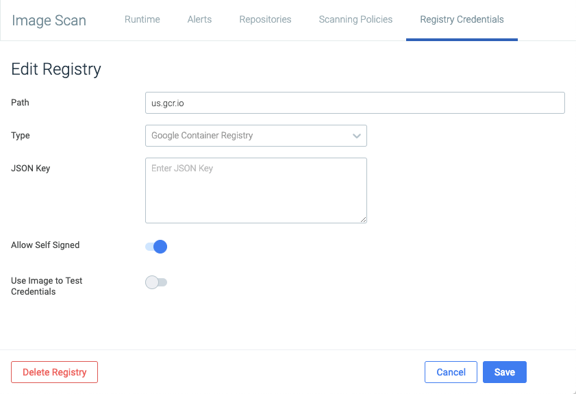
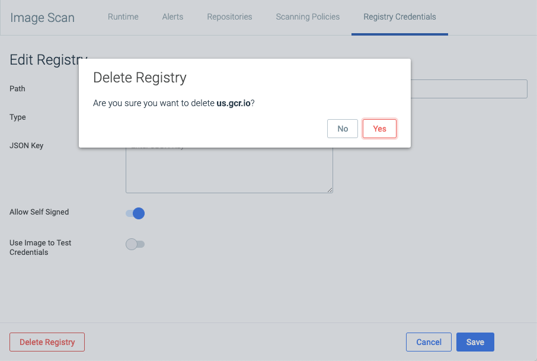
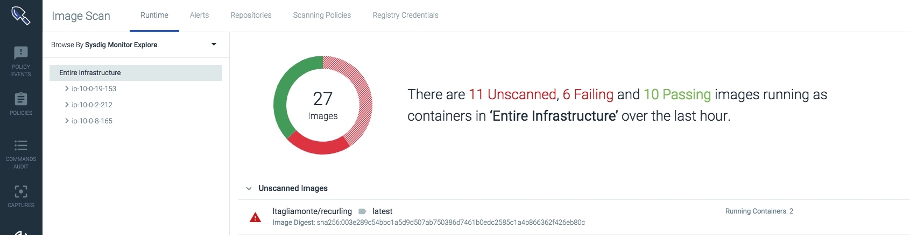
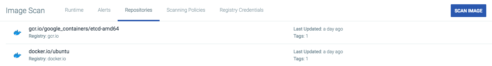
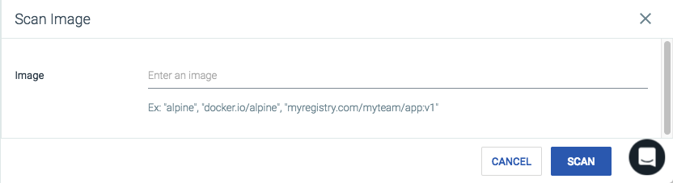
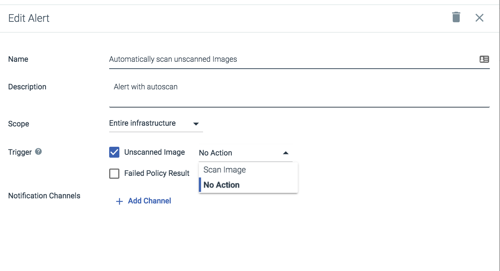
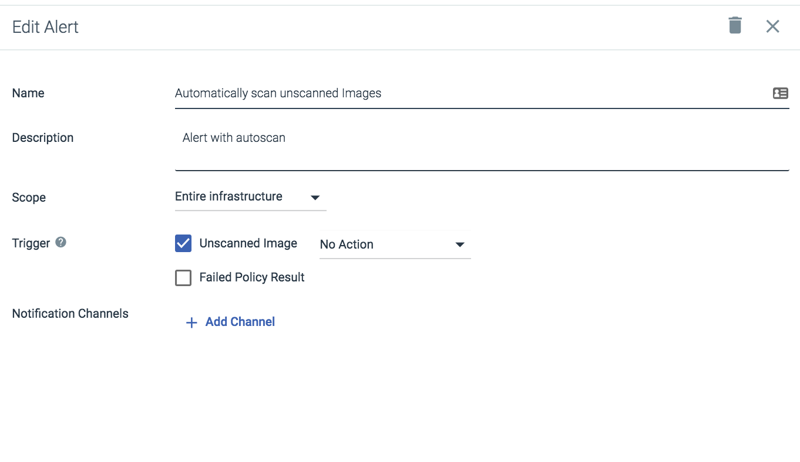

Image Scanning
Sysdig Secure image scanning allows users to identify known vulnerabilities and misconfigurations, prevent vulnerable images from being deployed, and report on the risk level of images actively running in the environment. Images can be scanned and analyzed either manually or as part of the build pipeline via a Jenkins plugin.
As part of the analysis, artifacts are created and stored. These artifacts include:
Official OS packages
Unofficial packages
Configuration files
Artifacts such as NPM modules, PiP, GEM, and Java Archives
Secrets or sensitive data
Available updates for vulnerabilities.
Once the image analysis is complete, the contents are evaluated against multiple vulnerability databases (shown in the image below), and a user-defined policy list, to determine if the image meets or violates configured policies.
 |
Contents
Configure the Build Environment
Several steps are required to configure the build environment for image scanning.
Configure the Anchore CLI
Sysdig Secure uses the Anchore open-source engine to perform image analysis. Users can use the anchore-cli with Sysdig Secure for easier registry integrations, command line reporting, and advanced repository subscription capabilities.
Note
The Anchore CLI is available for download from GitHub: https://github.com/anchore/anchore-cli. For installation steps, refer to the README file.
Several environment variables should be configured as part of the installation and setup process, depending on whether you are using an on-premises or SaaS environment:
For on-premises environments:
export ANCHORE_CLI_URL=https://ONPREM_SYSDIG_HOST/api/scanning/v1/anchore export ANCHORE_CLI_USER=SYSDIG_SECURE_API_TOKEN export ANCHORE_CLI_PASS= export ANCHORE_CLI_SSL_VERIFY=n
Note
Replace the
ONPREM_SYSDIG_HOSTvariable with the host used to reach the Sysdig UI, and theSYSDIG_SECURE_API_TOKENvariable with API token found in the Sysdig Secure UI.See Retrieve the Sysdig API Token for details.
For SaaS environments:
export ANCHORE_CLI_URL=https://secure.sysdig.com/api/scanning/v1/anchore export ANCHORE_CLI_USER=SYSDIG_SECURE_API_TOKEN export ANCHORE_CLI_PASS=
Note
Replace the
SYSDIG_SECURE_API_TOKENvariable with API token found in the Sysdig Secure UI. See Retrieve the Sysdig API Token for details.
Note
Ensure the ANCHORE_CLI_PASS value remains empty for both on-premises and SaaS environments.
Listed below are several useful CLI commands.
Add an image to the Anchore Engine
user@host:~$ anchore-cli image add docker.io/library/debian:latest
List images analyzed by the Anchore Engine
user@host:~$ anchore-cli image list
Get a specific image and see when its status goes to analyzed
user@host:~$ anchore-cli image get docker.io/library/debian:latest
Perform a vulnerability scan on an image
user@host:~$ anchore-cli image vuln docker.io/library/debian:latest os
Configure the Jenkins Plugin
Sysdig provides a Jenkins plugin to allow users to integrate image scanning functionality with their existing build process. For more information on configuring the plugin, refer to the Sysdig Secure Jenkins Plugin documentation.
Registries
Add a New Registry
To add a new registry:
From the
Image Scanningmodule, navigate to theRegistry Credentialstab.Click the
Add Registrybutton. Configure the path to the registry.
Open the
Typedrop-down menu and select the desired registry type.Configure the registry specific parameters:
Docker:
UsernamePassword
Docker_v2
Admin Account
Username: in the
'az acr credentials show --name <registry name>'command resultPassword: The password or password2 value from the
'az acr credentials show'command resultService Principal
Username: The service principal app id
Password: The service principal password
AWS ECR:
AWS access key
AWS secret key
Google Container Registry:
JSON Key
Toggle the switch to allow/deny self signed certificates.
Note
By default, the UI will only pull images from a TLS/SSL enabled registry. Enable this option to instruct the UI not to validate the certificate if the registry is protected with a self-signed certificate, or a certificate from an unknown certificate.
Toggle the switch if an image should be used to test credentials.
Note
Enabling this switch bypasses standard validation, and attempts to validate the registry by scanning an image.
Click the
Savebutton to save the registry.
Edit a Registry
To edit an existing registry:
From the
Image Scanningmodule, navigate to theRegistry Credentialstab.Select the existing registry to open the Edit window.
Update the parameters/toggle the available switches as necessary, and click the
Savebutton to confirm the changes.Note
The registry type cannot be edited.
Delete a Registry
To delete a configured registry:
From the
Image Scanningmodule, navigate to theRegistry Credentialstab.Select the existing registry to open the edit window.
Click the
Delete Registrybutton.Click the
Yesbutton to confirm the change.
Scan Images
Manually Scan an Image
When a new image is added to a running environment, it may need to be scanned manually. This can be done from either the Runtime tab, or the Repositories tab.
To manually scan an image from the Runtime tab:
From the
Image Scanningmodule, navigate to theRepositoriestab.Select an image from the list of unscanned images.
 Click the
Scan Nowbutton to scan the image.
To manually scan an image from the Repositories tab:
From the
Image Scanningmodule, navigate to theRepositoriestab.Click the
Scan Imagebutton. Define the path to the image, and click the
Scanbutton.
Configure Alerts to Automatically Scan Images
Sysdig Secure alerts can be configured to automatically trigger image scanning if an unscanned image is found, by setting the Unscanned Image trigger drop-down menu to Scan Image:
|  |
Note
For more information regarding configuring Alerts, refer to the Alerts section below.
Scanning Policies
Image scanning policies define the scenarios in which the build process may be stopped, or admins may be alerted to potential risks within container images. Each scanning policy is made up of a number of gates, triggers, and rules. The policy evaluation results are displayed on both the Runtime and Repositories tabs, allowing users to drill down into policies from a live image, or to select an image from within a repository to view the results.
A comprehensive guide to the available gates, triggers, and rules can be found here: Scanning Policy Gates, Rules, and Triggers.
Create a New Policy
To create a new scanning policy:
From the
Image Scanningmodule, navigate to theScanning Policiestab.Click the
Add Policybutton.Define a name for the new policy.
Optional: Provide a description for the policy, for ease of review.
Add a rule:
Open the
Gatedrop-down menu, and select the desired gate.Open the
Triggerdrop-down menu, and select the desired trigger.Optional: Configure each relevant parameter if necessary.
Note
Some triggers do not require parameters to be set.
The example below uses the
packagetrigger for thevulnerabilitiesgate.
Note
Refer to the Scanning Policy Gates, Rules, and Triggers documentation for a comprehensive list of available gates and triggers.
Optional: Repeat step 5 to add additional rules as necessary.
Click the
Savebutton.
Edit an Existing Policy
To edit an existing scanning policy:
From the
Image Scanningmodule, navigate to theScanning Policiestab.Select the desired policy from the list.
Edit the policy rules as required, and click the
Save Policybutton.
Delete an Existing Policy
To delete an existing scanning policy:
From the
Image Scanningmodule, navigate to theScanning Policiestab.Select the desired policy from the list.
Click the
Delete(trash can) icon.Select the
Yesoption to confirm the change.
Alerts
Image scanning alerts, like all Sysdig alerts, can be configured to notify users when an issue in the infrastructure arises. However, image scanning alerts focus on two issues: when an image has failed a scanning policy evaluation, or an unscanned image has been added to the environment.
Create an Alert
To create a new alert:
From the
Image Scanningmodule, navigate to theAlertstab.Click the
Add Alertbutton. Define the name of the alert.
Optional: Provide a description for the alert, for ease of review.
Open the
Scopedrop-down menu, and select the desired alert scope.Select the desired triggers.
Click the
+ Add Channelnotification channels link to add a new notification channel.
Edit an Existing Alert
To edit an existing alert:
From the
Image Scanningmodule, navigate to theAlertstab.Select the desired alert from the list.
Edit the alert trigger, scope, and notification channels as necessary, and click the
Save Alertbutton.
Delete an Existing Alert
To delete an existing alert:
From the
Image Scanningmodule, navigate to theAlertstab.Select the desired policy from the list.
Click the
Delete(trash can) icon.Select the
Yesoption to confirm the change.